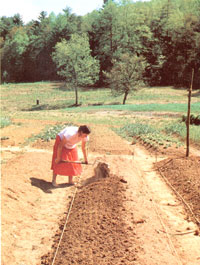

First, a spade-wide layer of topsoil is removed from Strip A. Next, after the lower layer of soil in that trench is loosened with a garden fork, topsoil from Strip B is shoveled into the ditch in Strip A, and the dirt in the lower level of Strip B is loosened. This process is repeated down the row to the end of the bed. Finally, the topsoil from Strip A is used to fill in the remaining ditch.